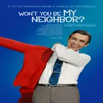
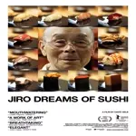

-
13th - Explora a história da raça e do sistema criminal nos Estados Unidos.
-
Planet Earth II - Uma incrível visão em 4K da vida animal e da natureza em todo o mundo.
-
Won't You Be My Neighbor? - Um olhar afetuoso sobre a vida e carreira de Fred Rogers, o apresentador do programa infantil "Mister Rogers' Neighborhood".
-
Jiro Dreams of Sushi - Este documentário segue Jiro Ono, um mestre de sushi de 85 anos de idade, enquanto ele trabalha em seu mundialmente famoso restaurante em Tóquio.